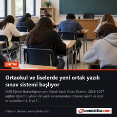

Mustafa Ömer Bingöl
Bilgisayar Programcılığı Öğrencisi · Yazılım Geliştirici · Web Tasarımcı
📸 @mustfa_bngz İletişime Geç10+yazılım projesi6+dil ve teknoloji18tarif150haber
Ben Kimim?
Atatürk Üniversitesi Pasinler Meslek Yüksekokulu Bilgisayar Programcılığı 1. sınıf öğrencisiyim; ancak yazılımla yolculuğum üniversiteden çok önce başladı. Bugün modern web siteleri tasarlayabilen, Python ile otomasyonlar yazabilen ve kendi tarayıcı eklentilerini geliştirebilen bir yazılımcıyım.
Karşılaştığım her sorunu, onu çözen aracı kendim yazarak aşmayı seviyorum. Yeni bir teknolojiyi kısa sürede öğrenip gerçek bir projede kullanabilmem en güçlü yanım; geliştirdiğim uygulamaları her gün kendim ve çevremdekiler kullanıyor.
Bu site de bunun bir örneği: tasarımından kodlamasına, 150 haberin derlenmesinden Instagram hesabına kadar her aşamasını planlayıp hayata geçirdim. Kodunu çıktı alınabilecek kadar sade ve düzenli yazmaya özen gösterdim.
Yetkinliklerim
- HTML5 & CSS3 %95
- JavaScript %88
- Görsel Tasarım %82
Bu Sitede Kullandıklarım
<table> <tr> <td>Sayfa iskeleti ve tablolar<form> <input> <select>Arama, giriş ve iletişim formları<ul> <ol> <li>Malzemeler ve yapılış adımları<marquee>Son dakika kayan yazı şeridi<a> <img>Bağlantılar ve görseller<nav> <section> <article>HTML5 bölümleriCSSDeğişkenler, flex/grid, animasyon, koyu temaJavaScriptTarif arama, form mesajları, tema
Proje Bilgileri
| Öğrenci | Mustafa Ömer Bingöl |
|---|---|
| Okul | Atatürk Üniversitesi Pasinler MYO |
| Program | Bilgisayar Programcılığı |
| Ders | Web Tasarımının Temelleri |
| Tarih | Kasım 2026, Erzurum |
Instagram'da Biz
Duyurulardaki haberleri @mustfa_bngz hesabımda görselli kartlarla paylaşıyorum.
Takip Et




🍽️ LezzetDurağı
Çorbalar · Ana Yemekler · Tatlılar · Duyurular · Hakkımda · İletişim · Instagram @mustfa_bngz
© 2026 Mustafa Ömer Bingöl · Web Tasarımının Temelleri Vize Projesi · Fotoğraflar: Wikimedia Commons (CC) · Haberler: eSonDakika.com